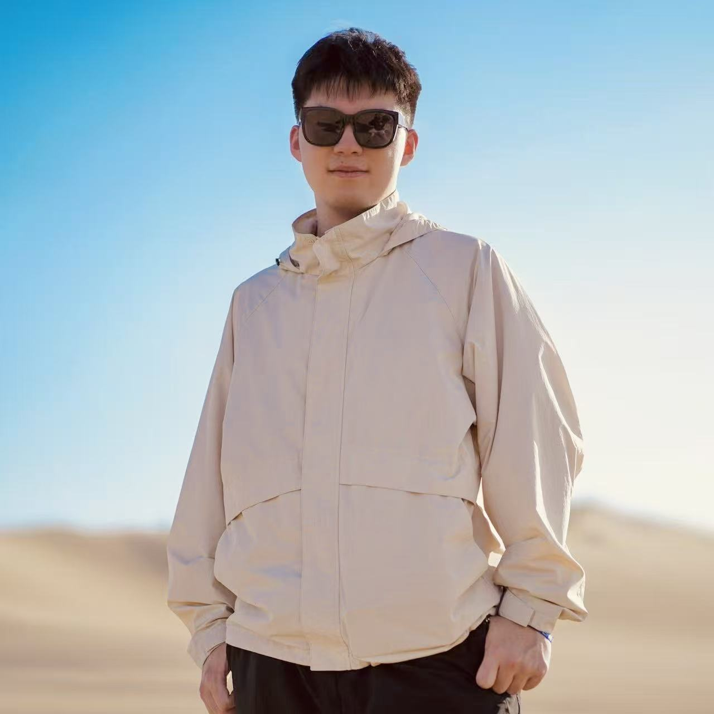
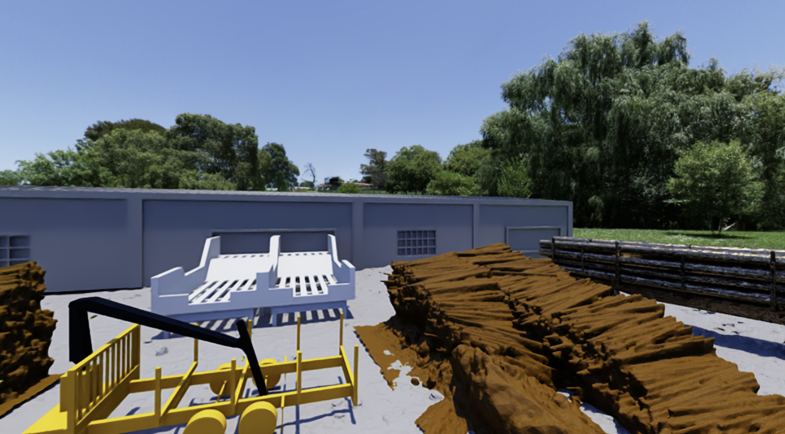
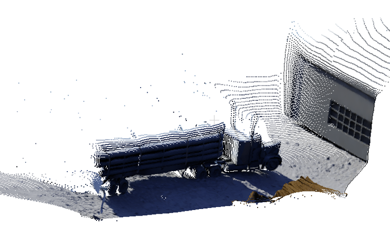
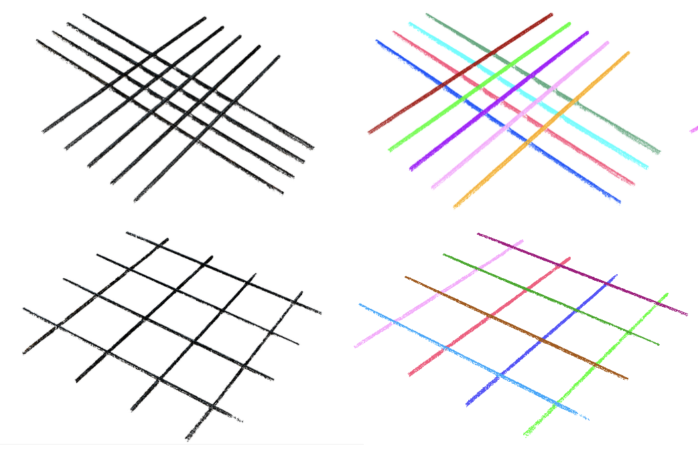
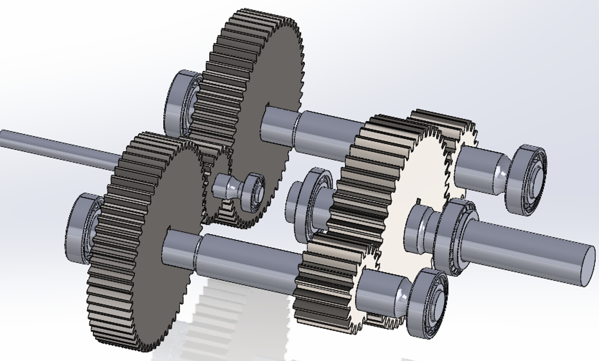

Final-year Undergraduate Student • Robotics • McGill University
I am a final-year undergraduate student in Mechanical Engineering at McGill University, working under the supervision of Prof. Yi Shao and Prof. Inna Sharf.
Starting in Fall 2026, I will join the University of Pennsylvania as a Master's student in Robotics at the GRASP Lab.
My research interests lie in robot learning, perception, and their applications in real-world robotic systems, with a focus on enabling intelligent automation through the integration of machine learning and robotic perception.
I am always open to research collaborations, internship or job opportunities, and general inquiries. Please feel free to reach out!
Email: yingtong.luo@mail.mcgill.ca



